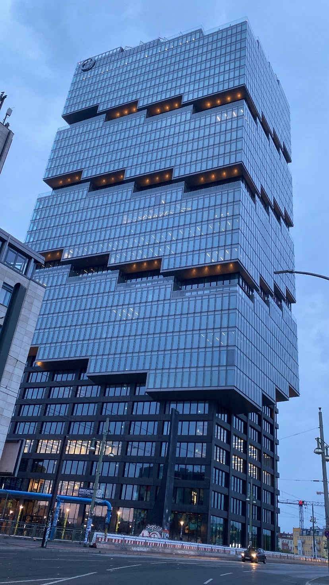
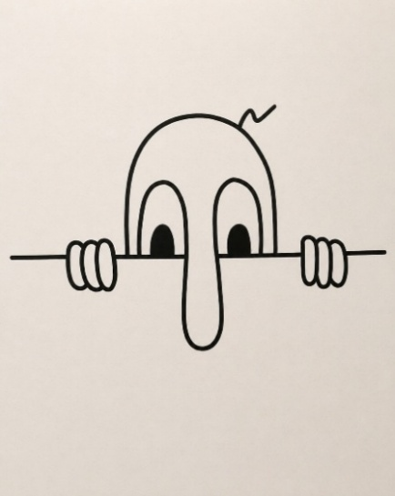
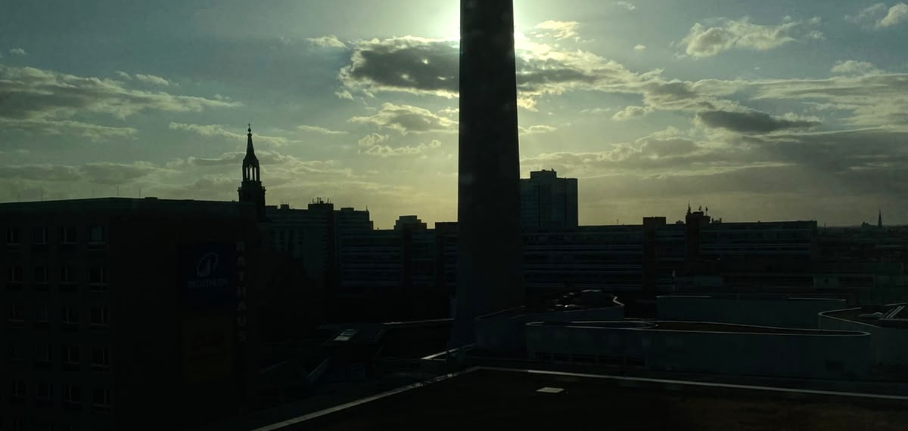

01Word on the Street
In most European cities, the street is infrastructure: a route between one destination and another. In Berlin, the street behaves like a newspaper, a gallery, a courtroom, a protest, and a psychological diary. The walls are not silent.
Berlin arrived as movement, sound, distortion, and contradiction. When I stepped into Alexanderplatz, it was raining heavily. People crossed one another in directions that appeared almost random. Somewhere to the side, a band was playing Experience. The music was emotional and orderly, but everything surrounding it felt scattered.

For a moment, I felt that I was looking at a sketch pulled diagonally from its corners: recognizable, yet distorted; structured, yet resisting symmetry.
Someone has painted anger on the walls. Someone else has placed humor beside it. Another person has written a name simply to prove that he existed. Layer upon layer, the city communicates through accumulation. No single voice dominates. No single message survives unchallenged.

And this accumulation tells a story about power. A political message is interrupted by an advertisement; an advertisement is altered by an artist; the artist's rebellion is photographed by a tourist; the tourist's photograph attracts attention; attention attracts money; money increases rent. Eventually, the artist who helped make the neighborhood desirable may no longer be able to afford living there.
Which raises a question that refuses to stay on the walls. It steps off them and into policy, economics, and ethics.
02The Gentrification Paradox
The tension surrounding gentrification is more complicated than a conflict between good residents and bad investors. Development can bring safety, transportation, employment, and better infrastructure. A neighborhood should not be preserved in hardship merely because hardship produced authenticity.
But development turns destructive when improvement requires disappearance, when a place becomes better for everyone except the people who made it worth improving.
The city first ignores the artist, then romanticizes him, then markets his aesthetic, then prices him out.
The question is not whether change should happen. The question is: can a place become more valuable without treating its original people as an inconvenience?

And yet, even as the city erases certain names from mailboxes, other names refuse to disappear. They persist on concrete, on bridges, on construction barriers. Some are artists. Some are activists. And some are echoes of something much older: the simple human need to say I was here.
03Kilroy Was Here
Before Berlin's walls became galleries, before graffiti became aesthetics, there was a simpler act of defiance. During the Second World War, Allied soldiers began scrawling a peculiar message wherever they went: "Kilroy was here." A bald head peeking over a wall. No explanation. No manifesto.
It was, at its core, a political act. Not political in the way of party slogans or ideological declarations, but political in the most fundamental sense: the assertion of presence where presence was supposed to be impossible. Soldiers used it to say: we reached this place before you expected us to. We survived long enough to leave a mark. An ordinary human being crossed through danger and retained enough agency to prove it.

The power of Kilroy was Controlled Visibility. The message did not provide a biography. It did not reveal rank, personality, or intention. It communicated only the essential fact: someone passed through this place. That anonymity increased rather than reduced its force. Kilroy could be anyone, and therefore, he could represent everyone.
We have always resisted disappearance. We carved names into trees, signed walls, published photographs, constructed buildings, raised children, and shared stories, partly because mortality makes invisibility unbearable. But not all visibility requires total exposure. In modern life, people confuse being seen with revealing everything. Powerful visibility gives enough to create recognition but leaves enough unspoken to sustain curiosity.
You are not the first person to feel small here. An ordinary human being entered this dangerous place before you. He did not control the war, the territory, or his fate. But he retained enough agency to leave a mark.
Berlin understood this. Its walls are full of Kilroys: anonymous, defiant, politically charged in their refusal to disappear. And perhaps this is what connects the soldier's chalk mark to the activist's spray paint to the artist's mural. They all say the same thing: I existed, I resisted, and I chose to be visible on my own terms.
But visibility alone is not enough. What you choose to see, and how you see it, matters just as much.
04Not Another Pretty Picture
Beauty alone can become an anesthetic. A beautiful image may attract the eye while asking nothing from the mind. Good public art does more than decorate the surface. It makes the familiar unfamiliar again.
Most people living in a city gradually stop seeing it. They learn the quickest route to work, the correct platform, the nearest supermarket, and the safest streets. Efficiency protects them, but it also reduces their environment to function. Familiarity itself can become a censor. The mind conserves energy by turning repeated surroundings into background.
The visitor sometimes sees what the resident no longer has the psychological space to notice. But the visitor carries a parallel danger: romanticizing what the resident must actually endure.

This tension between seeing and overlooking, between the fresh eye and the tired one, points to something deeper. If the city's surface can become invisible through repetition, what about the structures underneath? What about the beliefs, habits, and identities we carry without questioning them?
Sometimes, to see clearly again, you have to take things apart.
05Deconstruct to Construct
Entering darkness is not the same as developing depth. Some people grow attached to their suffering because suffering gives them identity. They continue describing the wound long after the wound has delivered its lesson. Darkness becomes aesthetic, then personality, then prison. Pain is meaningful only when it sharpens perception, builds courage, or deepens compassion.
You must enter the dark honestly, but not build a home there. Art rises above darkness not by denying it, but by converting it. Anger becomes a mural. Alienation becomes music. Powerlessness becomes a symbol. Confusion becomes language.
Between deconstruction and reconstruction, there is a psychologically dangerous space: Uncertainty.
The same is true of identity. There are periods in life when development cannot come through addition. We read more, work more, acquire more habits and pursue more achievements, believing that growth always means accumulating. But certain transformations require removal. An old identity must lose its authority. A relationship, belief, or ambition that once protected us may no longer serve the person we are becoming.
The difficulty is that the old structure often collapses before the new one becomes visible. You are no longer completely convinced by the past, but you have not yet earned full confidence in the future. This can feel like confusion, but it may actually be evidence of movement. You cannot remain fully loyal to an old identity while demanding the rewards of a new one. The price of becoming is temporary unfamiliarity with yourself.
Berlin knows this. The entire city is a monument to deconstruction and reconstruction. Walls torn down. Ideologies abandoned. Architecture rebuilt on top of rubble. And still, the city does not pretend to be finished. It remains mid-sentence, mid-thought, mid-becoming.
Which is perhaps why it makes such a powerful mirror.
06City as Muse
You do not control everything that enters your environment. But you retain the power of interpretation. The meaning you assign to experience determines what experience is allowed to build inside you.
Berlin offers no clean answers. It does not present a completed philosophy. It offers walls on which philosophies collide. The city is energetic, colorful, and entertaining, but underneath the surface lie tension, memory, loneliness, resistance, and unresolved ambition. Its beauty does not eliminate its darkness, and its darkness does not invalidate its beauty.
Perhaps maturity is not choosing one side of this contradiction. It is the ability to contain both without being controlled by either.
To remain hopeful without becoming naïve.
To face darkness without becoming cynical.
To pursue development without erasing humanity.
To attract attention without growing addicted to exposure.
To gain power without losing sensitivity.
To create order without murdering spontaneity.
Do not become merely another object inside the scene. Learn to see the scene. Most people enter systems and unconsciously inherit their pace, incentives, and definitions. They become part of the movement without asking where it leads. The observer steps back. Asks what everyone is reacting to. Notices what is rewarded, what is hidden, and which behavior has become automatic.

Enter the street. Feel the music. Follow the graffiti. Speak to the waiter. Listen to the resident. Allow the city to affect you. Then step back, filter the noise, and ask: What is happening here? Who created this meaning? Who benefits from it? Who pays for it? What is being normalized? What is disappearing? And, most dangerously: what is this city revealing about me?
Perhaps that is Berlin's true hospitality. It does not welcome you by making you comfortable. It welcomes you by making it impossible to remain unconscious.